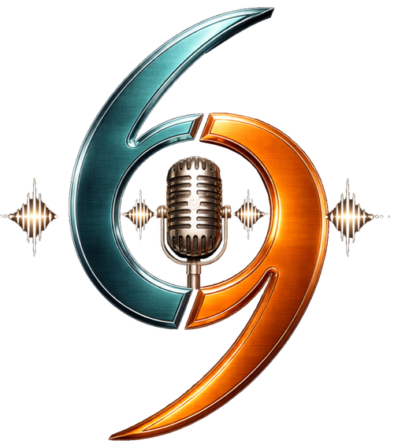

Podcast
Historias con situaciones, decisiones y dilemas humanos.
La pregunta central es: ¿Qué harías?
Cada episodio presenta una historia con situaciones, decisiones y dilemas que nos hacen reflexionar sobre lo que haríamos en el lugar de los protagonistas.
No buscamos decir quién tiene la razón. Buscamos mostrar diferentes perspectivas y generar conversación con opiniones cercanas, humor espontáneo y reacciones naturales entre los hosts y la audiencia.
Al final, esto es como un 6 o un 9, todo depende del lugar desde donde lo mires. Cada historia plantea una pregunta que no tiene una respuesta fácil.
Cargando episodios...
Al final, esto es como un 6 o un 9, todo depende del lugar desde donde lo mires.